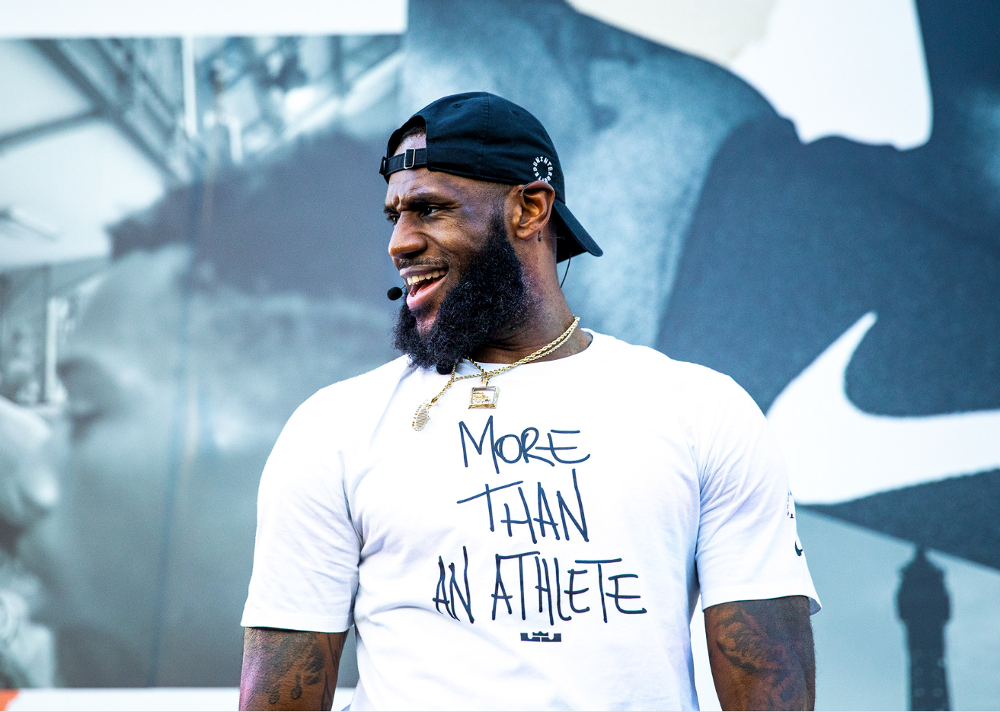

LeBron James – Vaikutus ja perintö
LeBron Jamesin merkitys koripallolle ulottuu paljon kauemmas kuin pelkät tilastot ja mestaruudet. Hän ei ole vain yksi kaikkien aikojen parhaista pelaajista, vaan myös yksi vaikutusvaltaisimmista urheilijoista koko maailmanlaajuisesti. LeBronin perintö näkyy NBA, joukkueissa, nuorissa pelaajissa ja kentän ulkopuolisessa toiminnassa.

Player empowerment ja vaikutus NBA
LeBron James on ollut keskeinen hahmo niin sanotussa player empowerment -ilmiössä, jossa pelaajat ottavat enemmän vastuuta ja päätösvaltaa omasta urastaan. Hänen siirtymisensä Miami Heatiin vuonna 2010 oli merkittävä hetki NBA historiassa ja muutti tapaa, jolla supertähdet lähestyvät vapaita agentteja ja joukkuevalintoja. LeBron osoitti, että pelaajalla voi olla valtaa omiin uraratkaisuihinsa ilman, että menestys kärsii.
Kentän ulkopuolinen vaikuttaminen
LeBron Jamesin perintö ei rajoitu urheiluun. Hän on perustanut LeBron James Family Foundationin ja I PROMISE School -koulun, joka tarjoaa koulutusta ja tukea vähävaraisille lapsille. Lisäksi LeBron on käyttänyt näkyvyyttään puhuakseen tärkeistä yhteiskunnallisista teemoista ja rohkaissut urheilijoita käyttämään ääntään positiiviseen vaikuttamiseen.

Kulttuurinen merkitys
LeBron James on kasvanut urheilijasta globaaliksi ikoniksi. Hän on vaikuttanut urheilukulttuuriin, muotiin, mediaan ja bisnekseen tavalla, johon harva urheilija on pystynyt. Hänen “More than an athlete” -ajattelunsa kuvastaa sitä, miten urheilija voi olla samalla pelaaja, johtaja ja vaikuttaja.
